Automotive service bays, organised for faster turnaround.
Automotive service environments depend on speed, accuracy, tool discipline and the efficient movement of vehicles, people and parts. Dealership workshops, multi-brand service centres, fleet garages and performance facilities each have their own operating rhythm, and we configure work systems, storage and accessories around it.
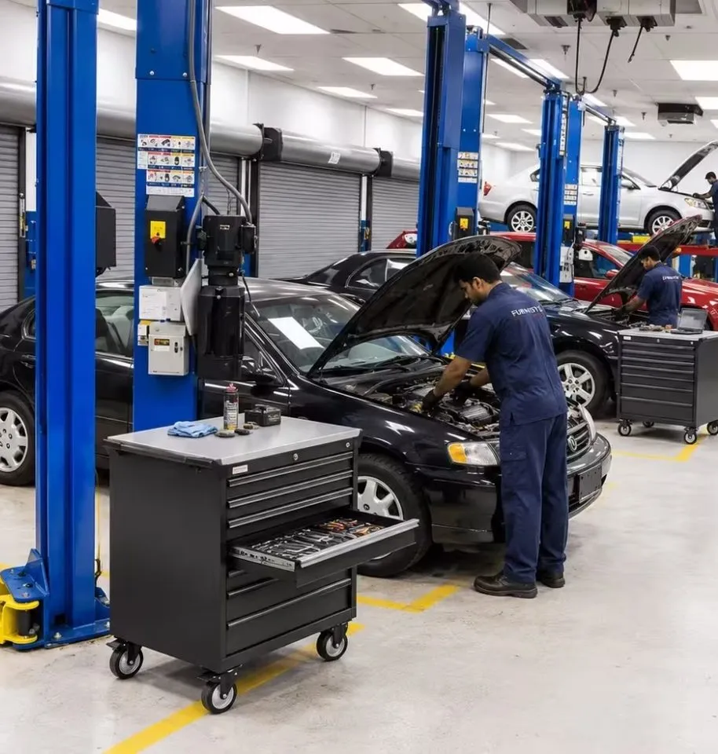
Sound familiar?
The everyday problems we hear most often from automotive service teams.
General Service Bay
Shared or scattered tools interrupt work and increase walking between jobs.
Express Service Bays
Small retrieval delays accumulate across a high volume of vehicles.
Diagnostic Bay
Valuable testers need a defined place away from floors and vehicle traffic.
Engine & Mechanical Work Area
Improvised benches can shift and make component handling difficult.
10 application spaces. One configured system.
Choose a space to see the challenge, how we configure it and the systems involved.
General Service Bay
General service bays handle routine maintenance, oil changes, filter replacement, brake service and suspension checks. Repeated access to tools, fluids and small parts makes bay-level organisation essential. A mobile setup keeps frequently used items close to the vehicle and supports a consistent working routine.
- Tool Search TimeShared or scattered tools interrupt work and increase walking between jobs.
- Cluttered WorktopsLoose consumables reduce usable space and make tools harder to locate.
- Mixed Small PartsFasteners and service items need defined locations to avoid mix-ups.
- Repeated ReachingPoor storage placement adds bending and unnecessary movement.
- Mobile cabinets with retainer-top work surfaces
- Organised drawers for tools and consumables
- Mobile carts for bay-level movement
- Waste bin cabinets for tidy service areas
- Tools within easy reach
- Cleaner service bays
- Better parts organisation
- Fewer workflow interruptions
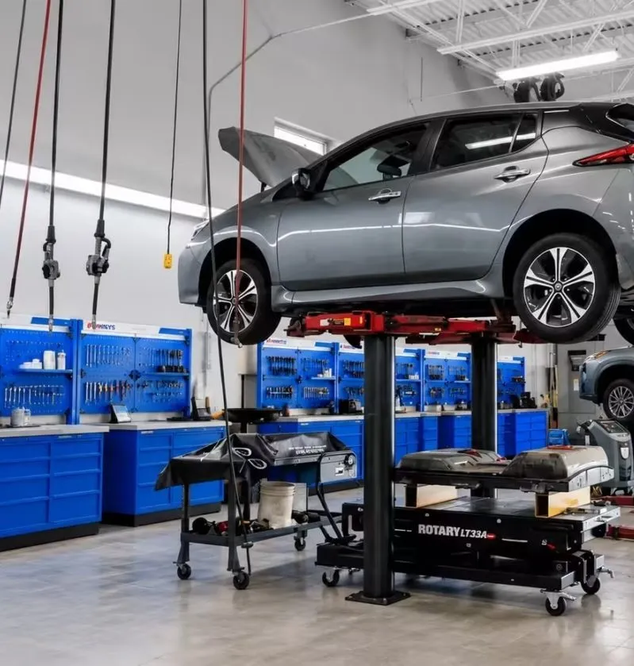
Express Service Bays
Express bays handle oil changes, tyre rotations, filter replacement and minor inspections. High job frequency makes every walk and workstation reset important. A compact, self-contained configuration keeps tools, consumables and service utilities ready for the next vehicle.
- Repeated Tool FetchingSmall retrieval delays accumulate across a high volume of vehicles.
- Slow Bay ResetAn inconsistent layout makes replenishment and reset less predictable.
- Poor Utility AccessAir and fluid lines need practical positioning near the task.
- Peak-Hour CongestionClutter and excess movement interrupt quick-turnaround work.
- Pro workbenches with integrated cabinets
- Link Uprighter and pegboard tool access
- Hose reel storage and utility integration
- Lift control and waste bin cabinet options
- Quicker bay reset
- Tools ready for use
- Organised utility access
- Smoother service flow
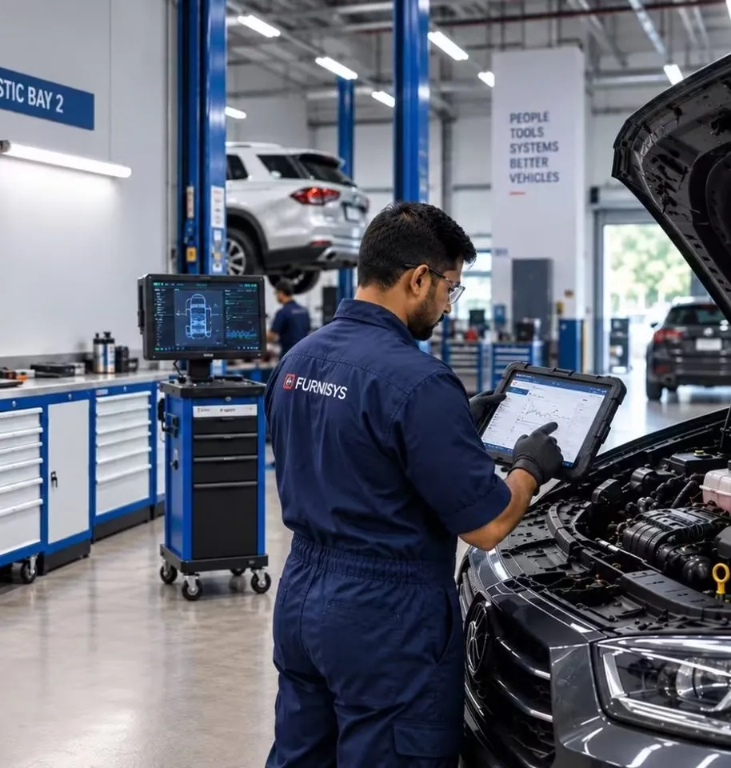
Diagnostic Bay
Diagnostic bays support fault-finding before a repair path is chosen. Scan tools, multimeters, battery testers and related equipment need secure storage and an organised work surface. Where electronic modules are handled, the workstation can be configured for ESD protection.
- Equipment ExposureValuable testers need a defined place away from floors and vehicle traffic.
- Cable ClutterUnmanaged leads tangle and slow equipment setup between vehicles.
- Frequent Tool MovementShared devices become difficult to locate and return consistently.
- Sensitive ElectronicsECU and other module handling needs an appropriate worktop setup.
- Scitec workbenches for diagnostic equipment
- Base cabinets for testers and accessories
- Cable management and equipment shelving
- ESD configurations for sensitive electronics
- Organised fault-finding
- Protected equipment
- Reduced cable clutter
- Faster equipment access
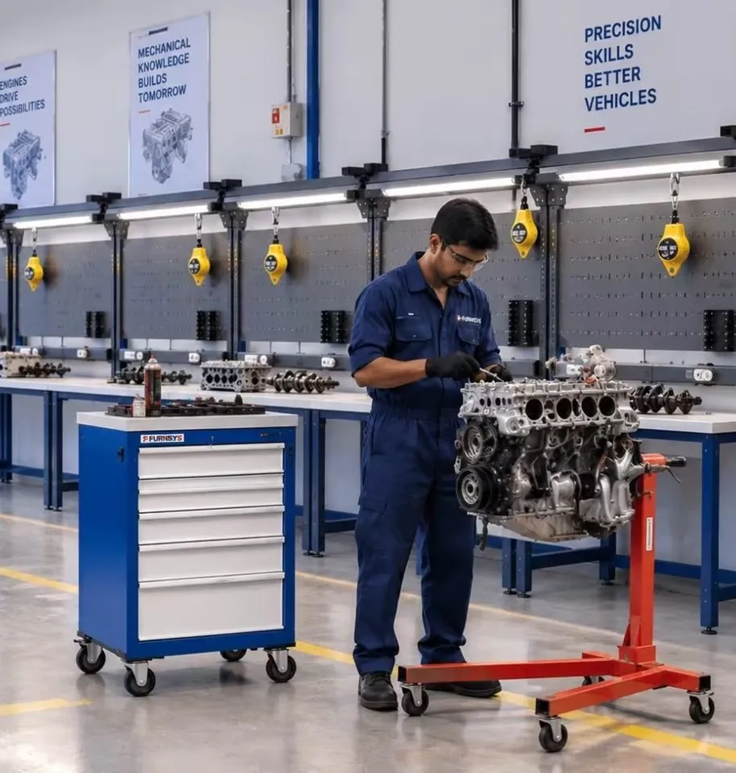
Engine & Mechanical Work Area
Engine and mechanical areas support gearbox service, drivetrain work, major repairs and performance upgrades. Stable work surfaces are needed alongside controlled handling of seals, gaskets and fasteners. Workbenches and nearby storage should support the full dismantling and reassembly sequence.
- Unstable Work SurfacesImprovised benches can shift and make component handling difficult.
- Mixed ComponentsSeals, gaskets and fasteners need segregation throughout the job.
- Physical StrainLong repair tasks need a practical working height and accessible tools.
- Disrupted ReassemblyParts stored away from the bench interrupt the repair sequence.
- Heavy-duty Scitec and Pro workbenches
- Robust worktops and bench-vice provision
- Segregated storage for small components
- Mobile cabinets close to the repair task
- Stable repair workspace
- Organised components
- Tools close to the job
- Smoother reassembly
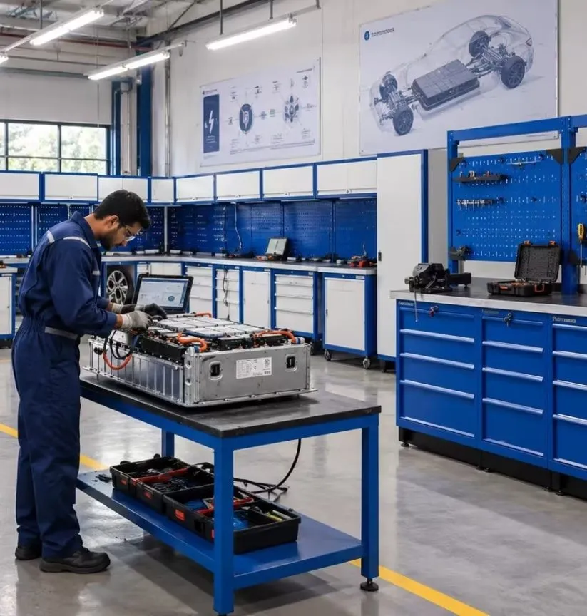
Battery & EV Service Zone
Battery service areas support conventional battery testing, charging-system diagnostics and EV-related equipment. Defined storage helps separate testers, insulated tools and safety gear. Electronic-module handling may require an ESD configuration; high-voltage work follows the vehicle maker's service procedures.
- Shared EquipmentTesters and chargers need assigned locations for reliable access.
- Tool SegregationInsulated tools and safety gear need clearly designated storage.
- Sensitive DevicesElectronic modules require appropriate handling and work surfaces.
- Unclear Work ZonesA defined service area helps control equipment and task preparation.
- Scitec and Pro workbench configurations
- Base cabinets for test equipment and tools
- Designated insulated-tool and PPE storage
- ESD worktops for suitable module-handling tasks ESD protection is for electronic components; it is not high-voltage electrical insulation.
- Defined equipment zones
- Organised tool storage
- Ready access to testers
- Controlled task preparation
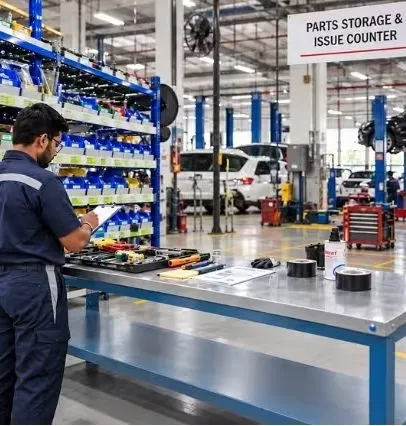
Parts Storage & Issue Counter
The parts area supplies replacement components, lubricants and consumables to every service bay. Delays or errors here interrupt work at the vehicle. Visible storage, FIFO-friendly staging and a defined issue counter support controlled handover against job cards.
- Picking ErrorsMixed storage makes similar parts difficult to identify and issue.
- Poor Stock RotationFast-moving consumables need clear replenishment and FIFO access.
- Unnecessary HandlingDispersed stock increases walking and repeated material movement.
- Issue TraceabilityA defined handover point helps connect parts to the service job.
- Flow racks for FIFO-friendly consumables
- Storage cabinets for organised replacement parts
- Issue-counter workstations for controlled handover
- Link trolleys for movement to service bays
- Clearer parts visibility
- Controlled parts issue
- Smoother stock rotation
- Better bay supply
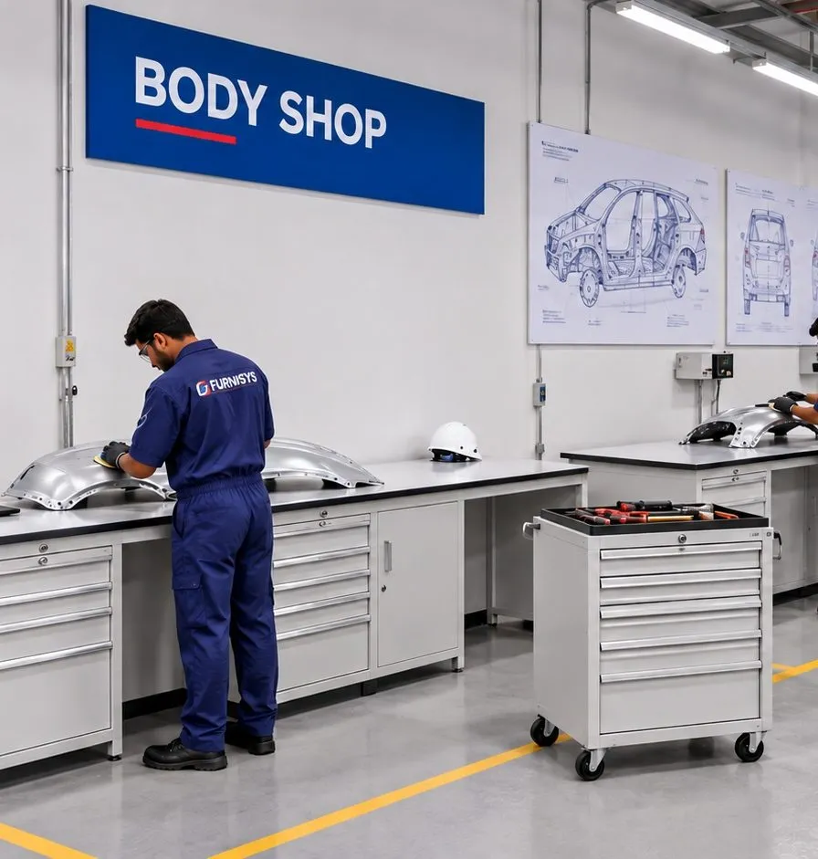
Body Shop
Body shops handle panel repair, grinding, sanding and preparation before reassembly. Tools must move with the technician around different vehicle sizes. Mobile storage and a stable fitting bench help keep access routes clear and support organised component rework.
- Debris & ClutterAbrasives and repair debris make loose tool storage harder to manage.
- Obstructed AccessTools on floors or temporary surfaces restrict movement around vehicles.
- Changing Work PositionsPanel work needs storage that can move with the repair task.
- Fitting-Bench ReadinessReassembly needs a stable surface and practical bench-vice provision.
- Mobile cabinets and Link trolleys
- Base cabinets for organised tool storage
- Heavy-duty workbenches with vice provision
- Mobile carts for point-of-use access
- Clearer vehicle access
- Tools move with the job
- Ready fitting workspace
- Organised reassembly
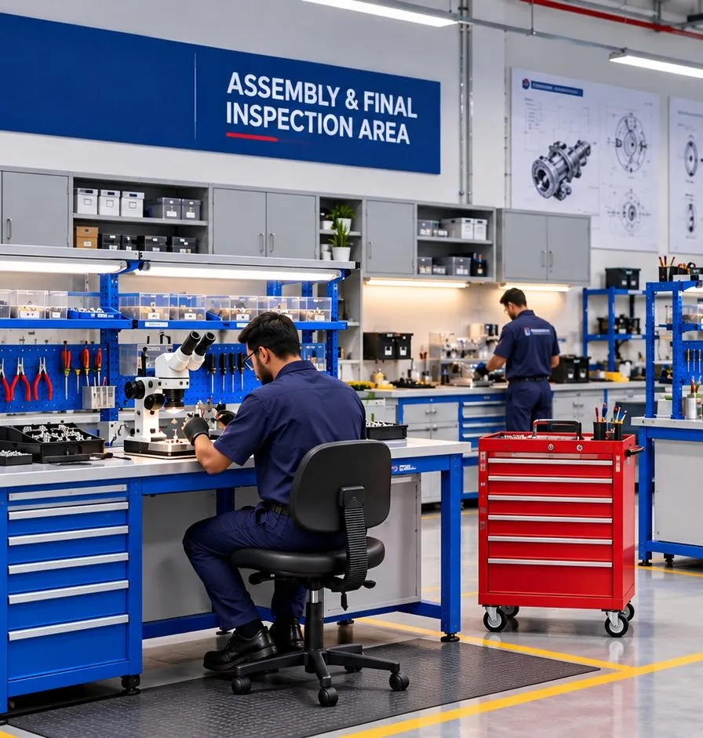
Assembly & Final Inspection
Final inspection is the last quality checkpoint before vehicle handover. Technicians verify completed work, check fixings and record results. A clean work surface and consistent tool positions support repeatable checks and orderly documentation.
- Inconsistent Tool StorageInspection equipment needs a fixed, visible location.
- Time PressureA disorganised setup makes checks harder to complete consistently.
- Documentation ClutterJob records need a clean area for review and completion.
- Rework RiskPoorly controlled verification can leave unresolved work unnoticed.
- Scitec workstations for verification tasks
- Upright or pegboard inspection-tool storage
- Base cabinets for torque and pneumatic tools
- Clean surfaces for checks and documentation
- Repeatable verification
- Organised inspection tools
- Clearer job records
- Controlled vehicle handover
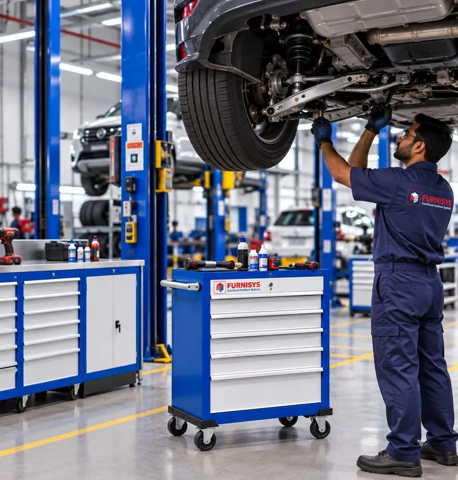
Suspension & Undercarriage Service
Suspension service involves struts, shock absorbers, bushings and steering components. Oil and grease can spread during dismantling and servicing. An easy-to-clean worktop and nearby storage help separate tools and components and prepare the bench for the next job.
- Oil & GreaseFluid residues make ordinary work surfaces difficult to maintain.
- Cleaning DelaysUnsuitable surfaces increase reset effort between service tasks.
- Component ContaminationClean and used parts need clearly separated working positions.
- Repeated HandlingComponents and tools should remain within practical working reach.
- Workbenches with stainless steel worktops
- Mobile cabinets for accessible service tools
- Organised drawers for component segregation
- Defined surfaces for dismantling and inspection
- Easier worktop cleaning
- Cleaner component handling
- Organised service tools
- Quicker workspace reset
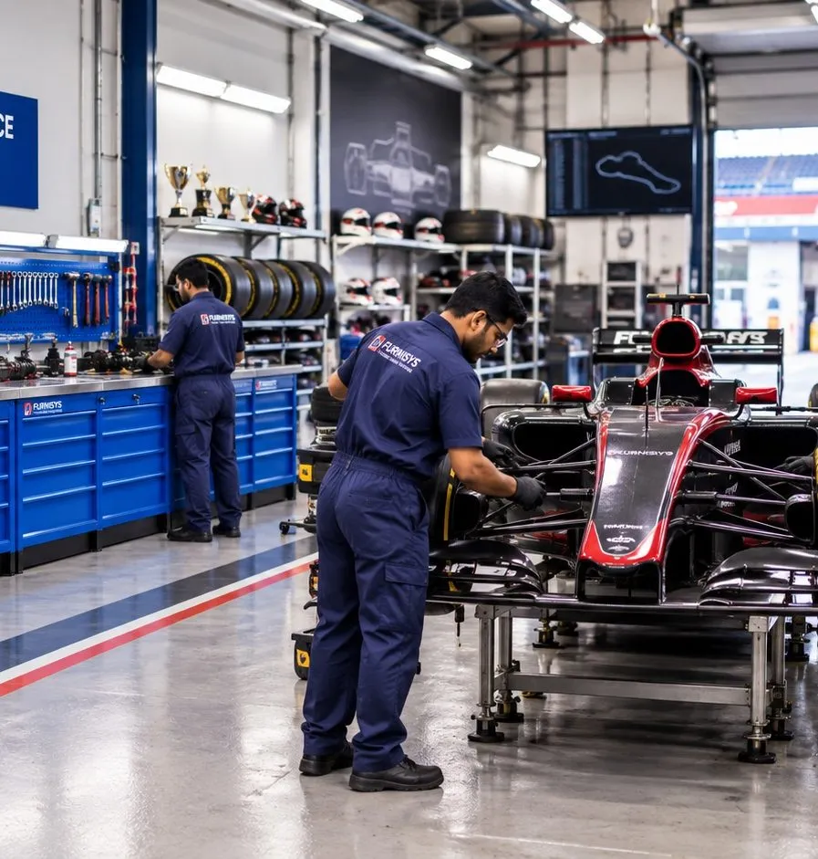
Motorsport & High-Performance Service
Race-car preparation, tuned vehicles and performance builds depend on speed, precision and repeatability. Changing tasks demand a workstation that is easy to organise and reset. Modular storage and mobile tool access support preparation, adjustment and rapid service turnaround.
- Rapid TurnaroundTool retrieval delays interrupt tightly scheduled preparation work.
- Changing SetupsDifferent builds require storage that can adapt to the task.
- Tool AccountabilityEquipment needs a clear home for consistent return and readiness.
- Multiple Active TasksParts and tools must stay organised as work moves around the car.
- Configured workstations and integrated storage
- Mobile tool trolleys and cabinets
- Storage walls for organised equipment access
- Modular layouts for changing service needs
- Faster tool access
- Adaptable workspaces
- Repeatable preparation
- Organised performance work
Fundamentals of workspace design.
- Precision
- Electrical protection
- Traceability
- Tool control
- Ergonomics
- Repeatability
- Adaptability
The Furnisys workspace ecosystem.
Work systems, storage systems and accessories designed to work as one.
Work systems

Stands & Trolleys
Configure stands and trolleys to securely hold or transport parts, tools, and test equipment—ideal for use across production, assembly, repair, and maintenance environments.

Pro Series Heavy Duty Workbench
An industrial grade workbench series designed to withstand rough work environments.
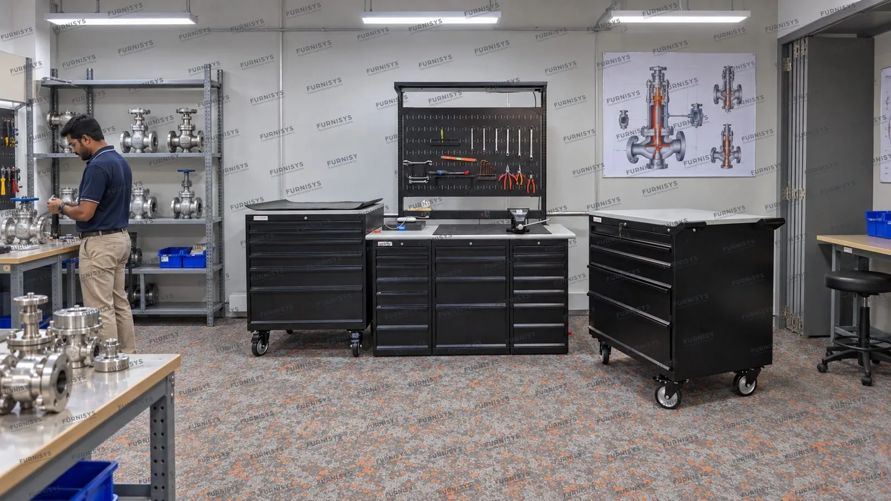
Scitec Series Technical Workbenches
An adaptable workbench series designed for diverse technical environment.

Link Flow Racks
Experience efficient material handling with LINK Flow Racks—designed to streamline picking, sorting, and assembly processes.
Storage systems
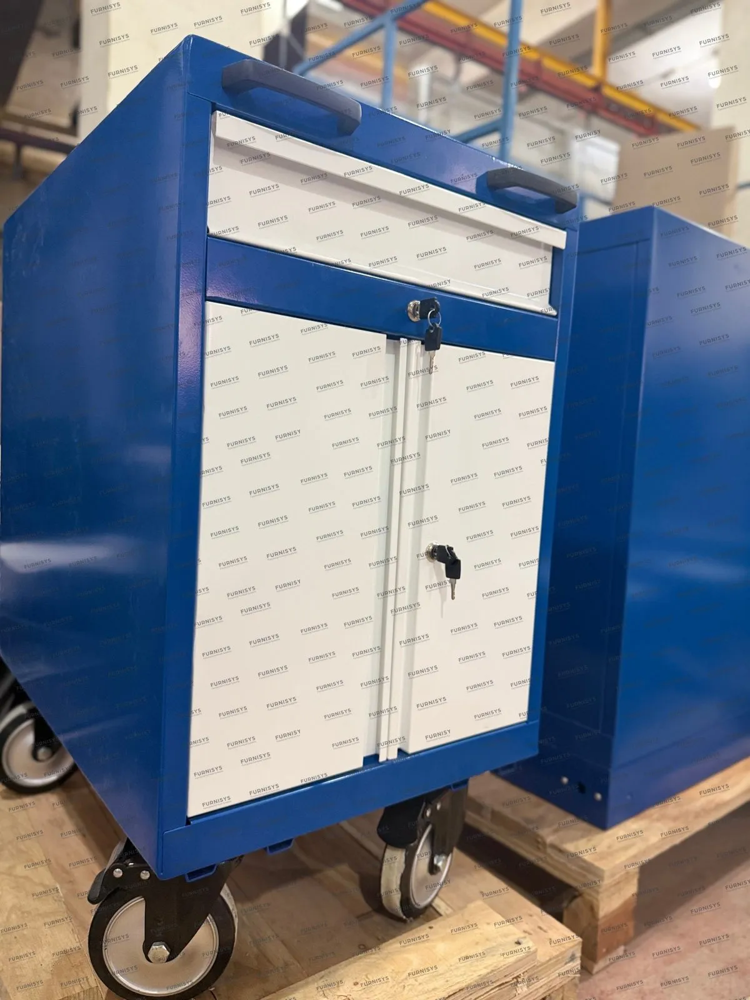
Mobile Cabinets
Designed for workflows that require tools and parts on the move, Furnisys mobile cabinets combine storage and mobility in one solution

Base Storage Cabinet
"Modular, high-capacity storage built to handle heavy loads" adapts to changing workspaces and demanding storage needs.

Storage Cabinets
Furnisys storage cabinet range is designed to achieve complete organization of parts , tools and equipment. Our extensive range of cabinet footprints & drawer heights…
Proof from real installations.
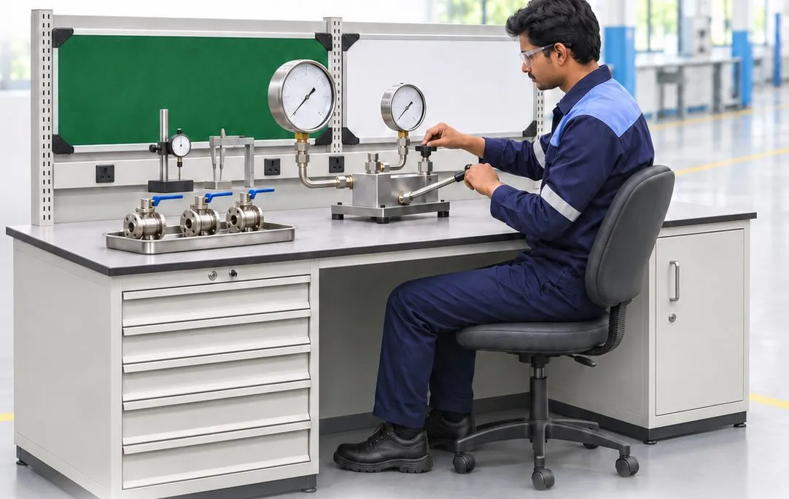
Eight packaging workstations for a bearing manufacturer
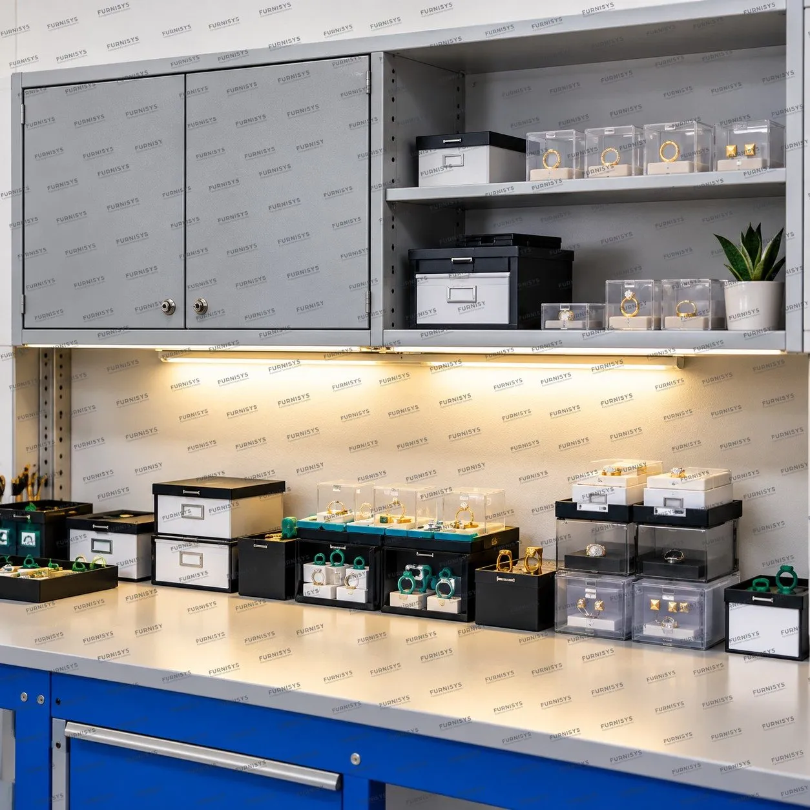
Liebherr Case Study
Liebherr Appliances India Private Limited is a heavy equipment manufacturer, a wholly owned subsidiary of Liebherr-Hausgeräte GmbH in Ochsenhausen (Germany).
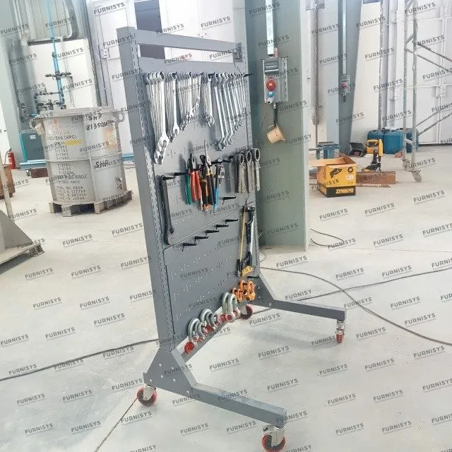
Optimizing Auto Service Centers with Efficient Storage, Workstations & Trolleys
"Optimizing Auto Centers" (label)
Trusted by manufacturers, laboratories and institutions across industries. See our clientele
Frequently asked questions.
Can one system cover every automotive service space?
Yes. Work systems, storage systems and accessories share standard modules, so each space gets its own configuration within one consistent system.
Can the setup change as our operations grow?
Yes. Stations are built from standard parts, so you can add drawers, power, uprighters or bays, or relocate stations, without replacing what you already have.
Do you plan the layout before manufacturing?
For confirmed projects we carry out a site study and prepare 2D and 3D layouts and a proposal before anything is manufactured.
How we engage.
Share your brief
Scope, application spaces, timelines and any drawings.
Specialist discussion
A workspace specialist reviews the brief with your team.
Site study & layout
For confirmed projects: site study, 2D/3D layout and proposal.
Manufacture & install
Built in Navi Mumbai, installed and supported by our team.
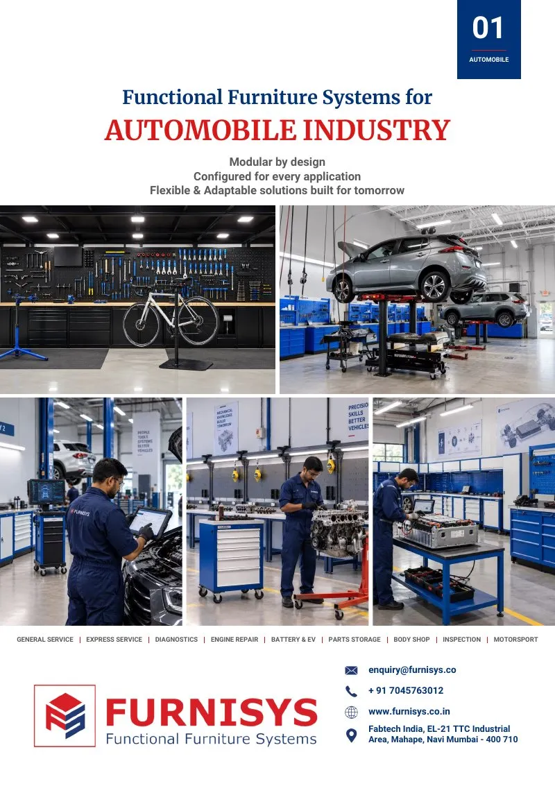
Automobile Industry Application Brochure
Every automobile space we configure for, with the systems, accessories and worktops used in each. Browse it as a flipbook or share it with your team.
Planning a new automotive service space?
Share your project brief. Every brief is reviewed by a workspace specialist who will contact you to discuss scope, layout and next steps.
Application-led design
Every station configured around the process, not a catalogue.
One accountable team
Design, manufacturing and installation from Navi Mumbai.
Built to scale
Standard modules that grow with your operation.
Discuss your project
Tell us about the facility and the scope. A workspace specialist reviews every brief and contacts you to discuss next steps.
- A workspace specialist reviews every enquiry
- Matched to the right system, and to a partner where one serves your region
- First response within one working day
Thank you
Your enquiry has reached our team. You'll hear from us within one working day.
Need to add drawings or photos? Reply to our email, or write to enquiry@furnisys.co.
See our latest automotive installations on LinkedIn
Follow Furnisys Automobile Industry for new projects, application ideas and workspace insights from the automotive industry.